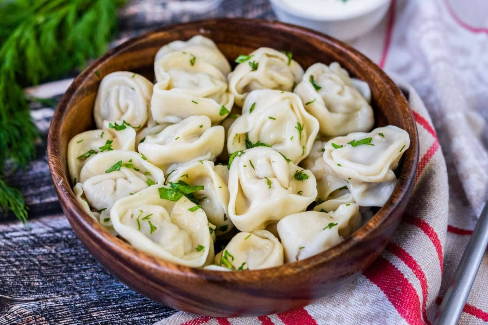

Структура пельменей
Пельмени состоят из:
- Свинина (начинка)
- Вода (бульон)
- Oболочка (тесто)

Немножко истории
Пельме́ни (ед. ч. пельме́нь, от коми пель нянь «хлебное ухо») — блюдо русской кухни из пресного теста с начинкой из рубленого мяса или фарша, употребляемое в варёном виде. Было заимствовано русскими жителями Прикамья, Урала и Сибири у финно-угорских народов, получив широкое распространение в русской и советской кухнях.
Ссылка на источник (если хотите больше истории)

student1287@sch192.net
следующая страница